おせちを作ったよ
あけましておめでとうございます。
今年は実家のおせち担当（親1）が大晦日に労働。代わりに私がおせち準備の一部を担うことになりました。
作ってる写真は見栄えがよろしゅうないので完成品を。
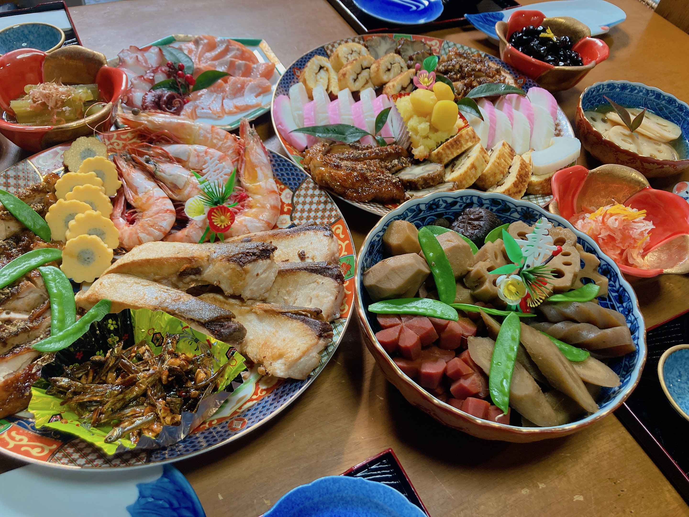
すごいことなっとりますん pic.twitter.com/7fqHeJeepl
— ₍₍⁽⁽🍳₎₎⁾⁾ (@sal_pipr) January 1, 2024
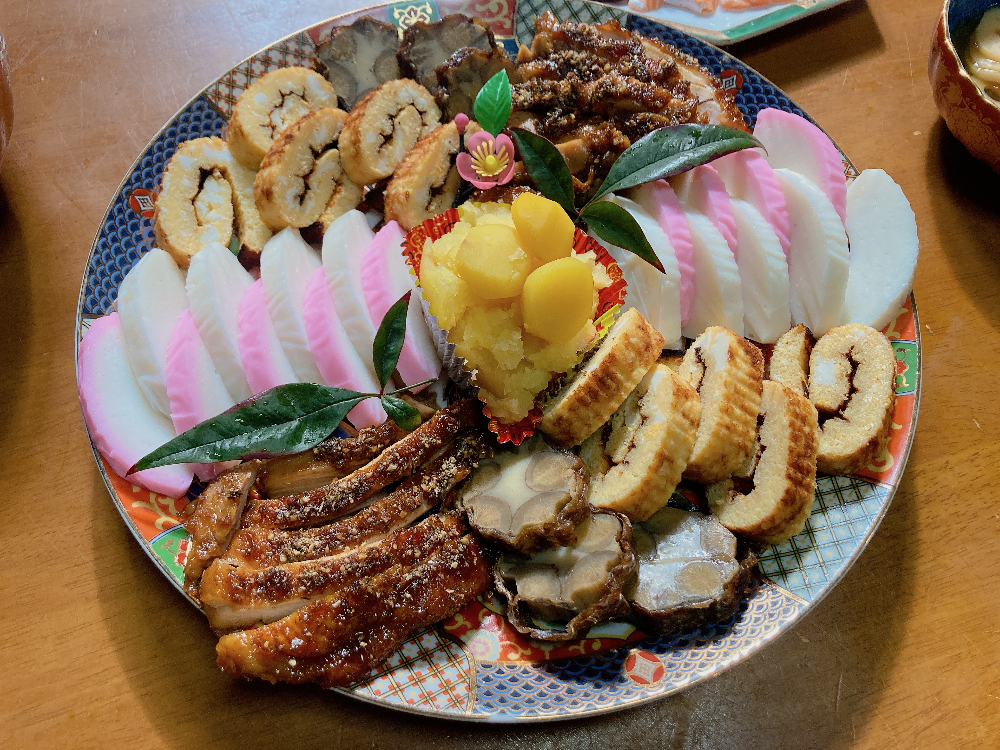
切る系のやつ。
前日のうちに伊達巻を焼いたよ。撹拌をサボったら卵の白身がまだら模様になってしまったかなしいね。
鶏は親作の照り焼き。
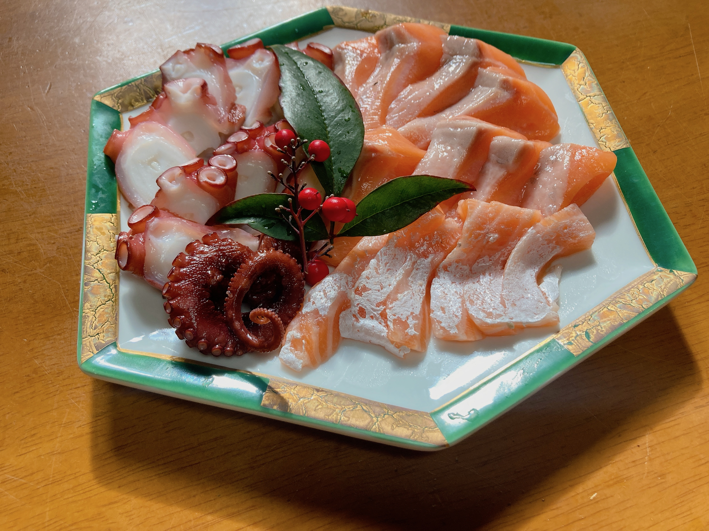
切る系のやつ2。
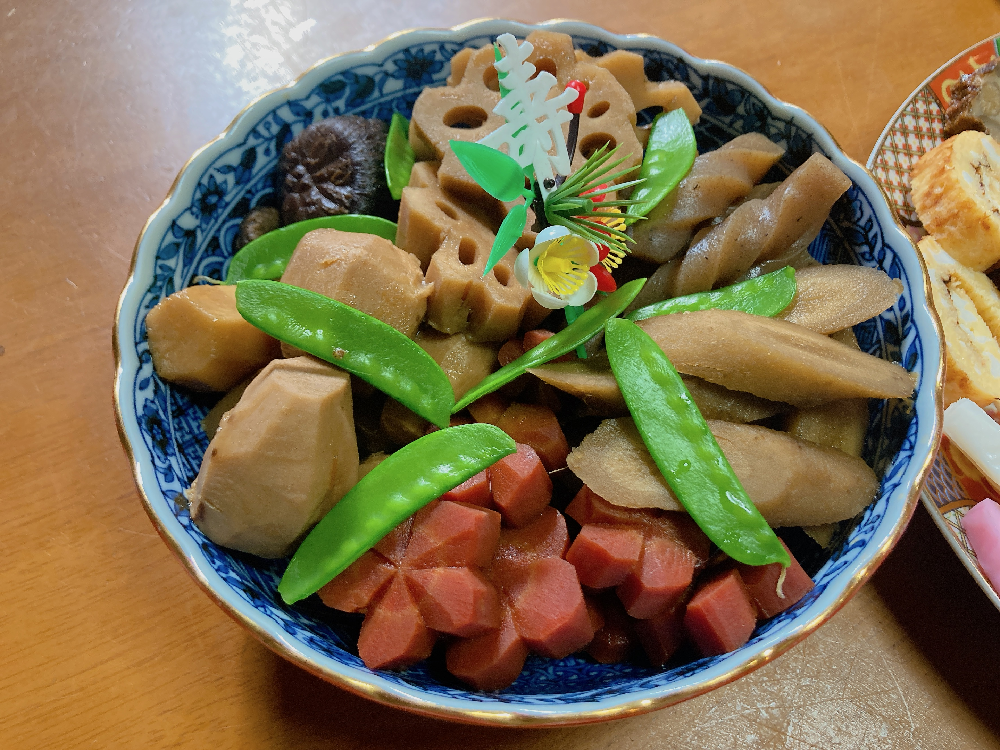
煮しめ。味決めるの大変だった。
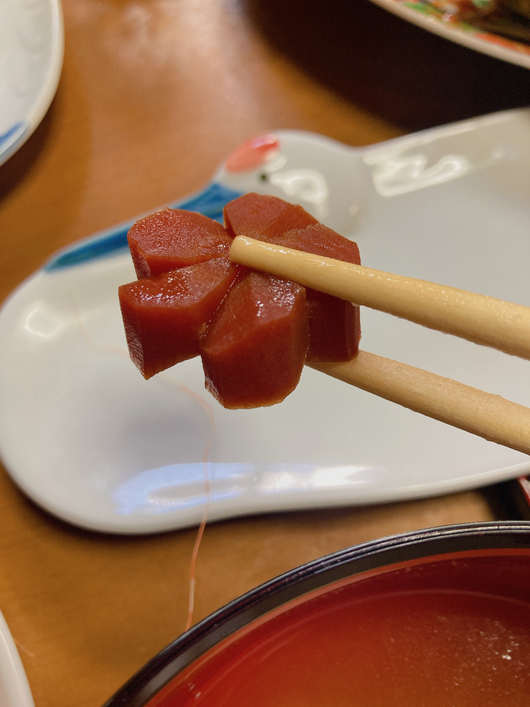
がんばって飾り切りしたよ。
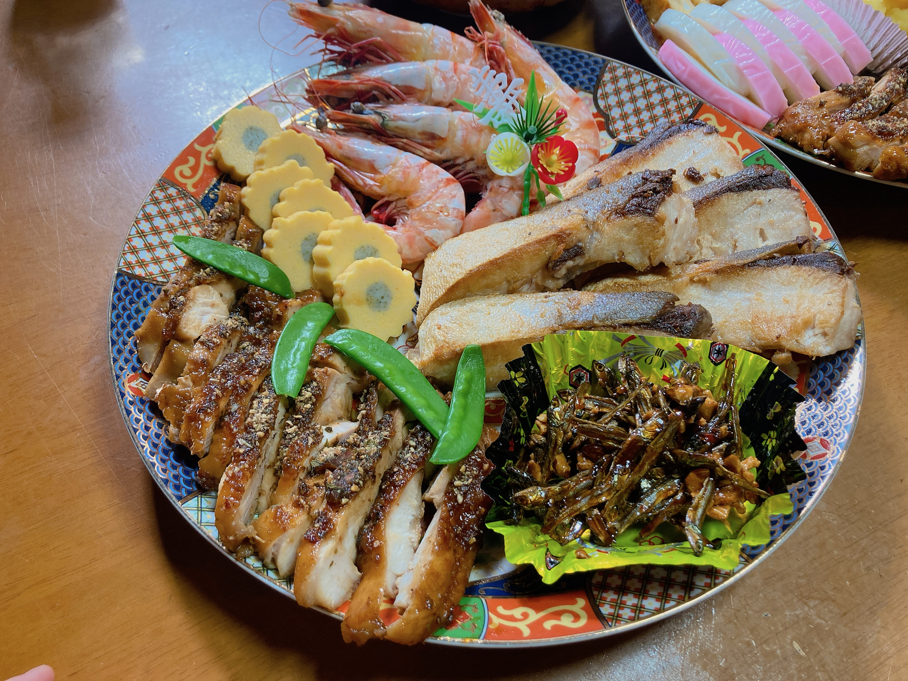
鰤を塩焼きしたよ。
塩茹で海老と田作りは親作だよ。
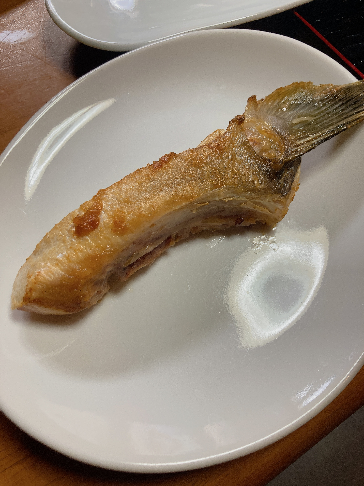
焼いた人特権で食べていいやつ。
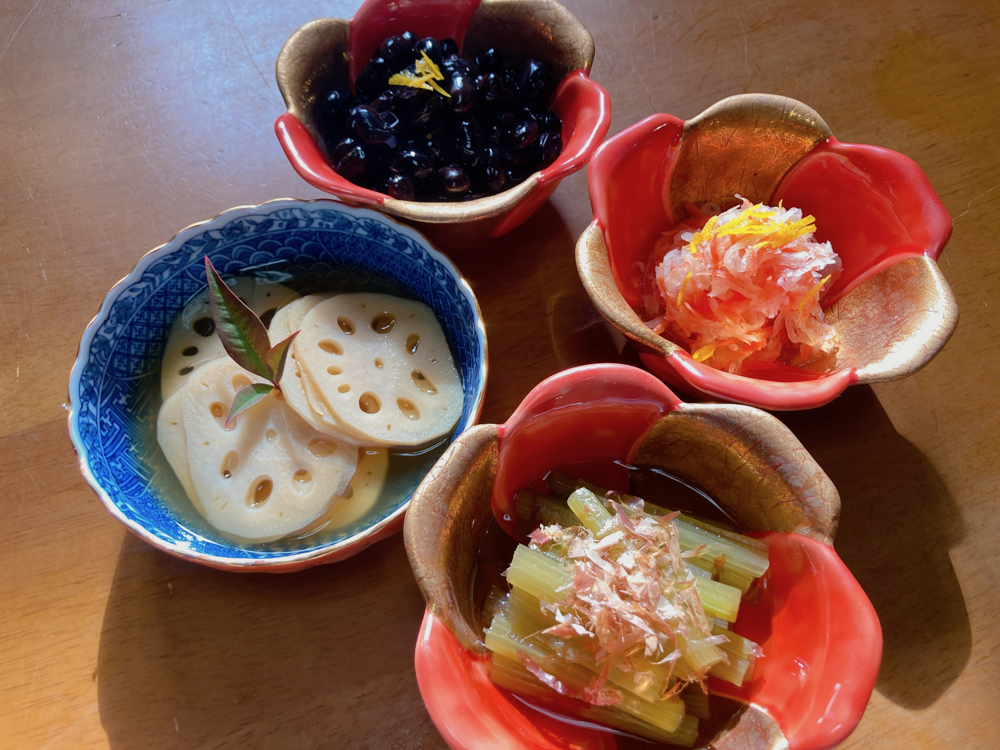
ふきを仕込んだよ。他のものは親作だよ。
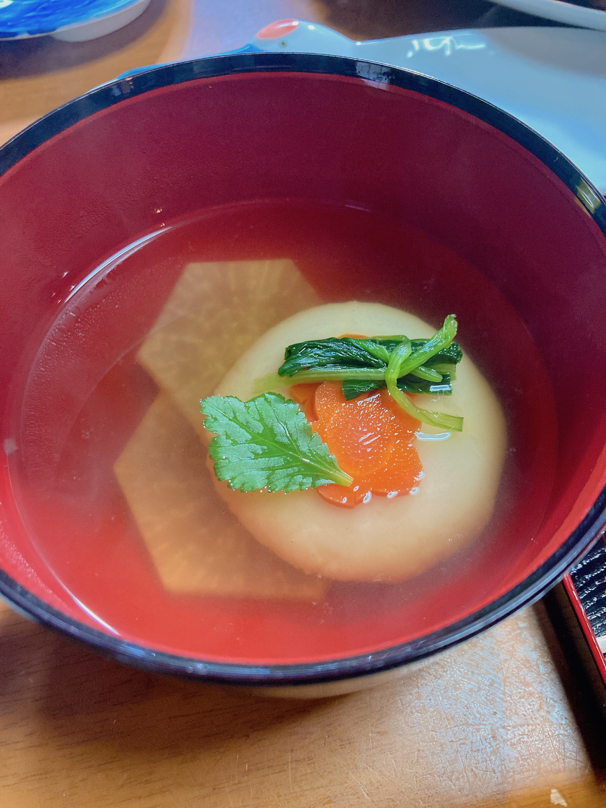
うちの雑煮はすましスタイル。地方的には白味噌のはずだけど、親戚に「正月は味の濃いものばかりで飽きるから雑煮くらいはあっさりさせたい」と言い出した人がいて、それを継承したらしい。雑煮の文字列とは似ても似つかないシンプルさ。
雑煮が好きなので毎年たくさん食べるのだけれど、今年は盛り付け中にお腹が一杯になってしまったらしく（切った人特権で練り物の端を味見しまくったから）、あんまり食べられなかったよ。
ふきがあっさりしてて食べやすかったな。自画自賛。
元旦は初詣。
神社の裏に、辺りを見渡せる山があります。
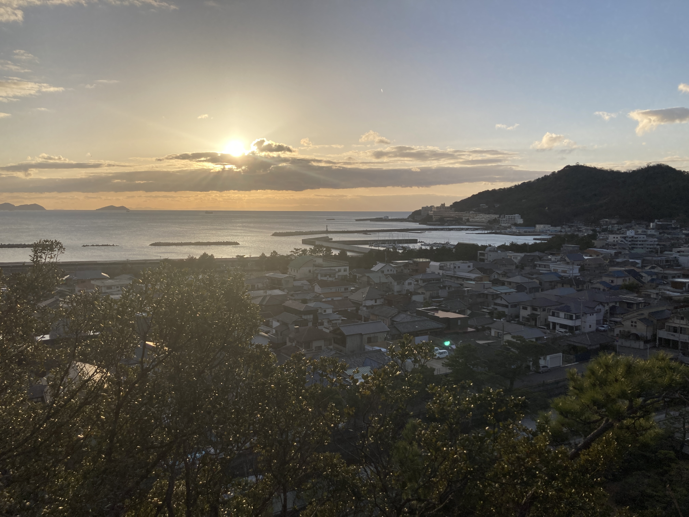
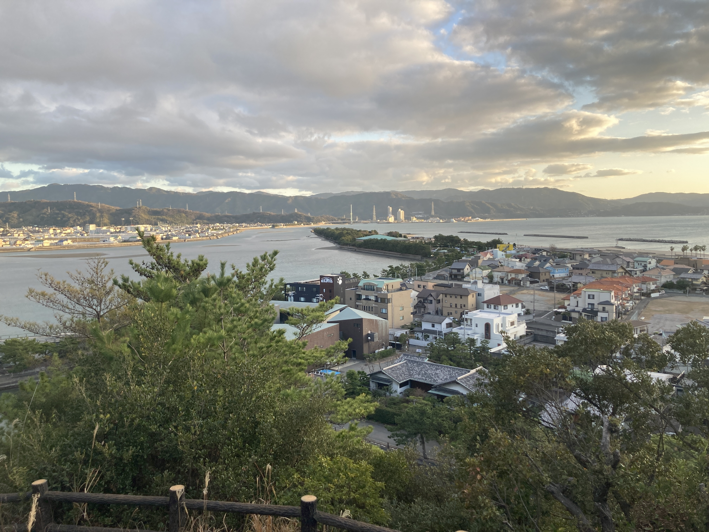
海の傍。
この地元、いつかは全部沈んでしまうのでしょうか。……いや、最近のあれこれではなく、ずっと前からそう思い続けて生きています。海の幸の恩恵を受けて海の傍で生きることは、海が牙を剥く災害のリスクと隣り合わせなわけで。
それが嫌で都会に逃げてきたけれど、やっぱり魚の美味しさでこういう地には勝てないし、今更慣れきった舌も誤魔化せない。どうしようもなく海は私の故郷で、そう育ってしまったことは変えられない。
海を見ると、複雑な気持ちになります。